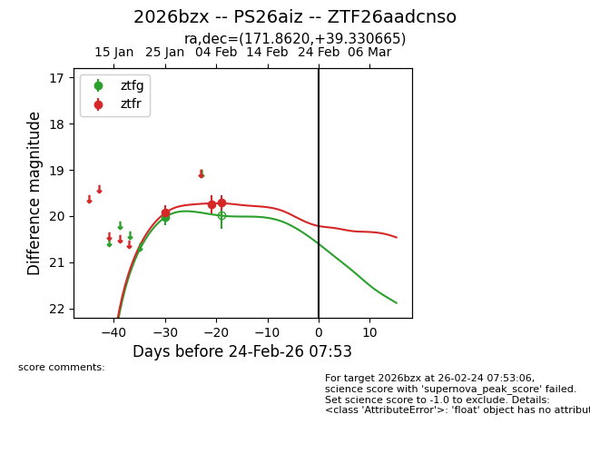
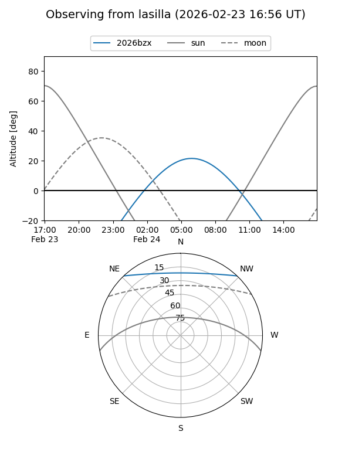
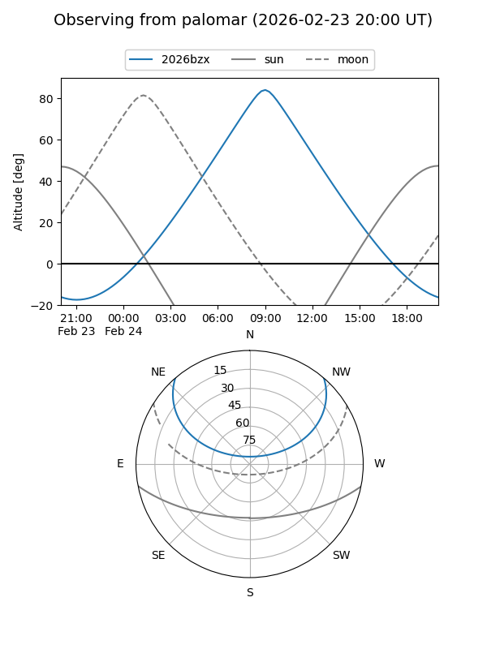

2026bzx
Target 2026bzx at 2026-02-24 09:08
Aliases and brokers:
FINK: link
Lasair: link
ALeRCE: link
TNS: link
YSE: link
alt names
ZTF26aadcnso (ztf,fink_ztf)
2026bzx (tns,yse)
PS26aiz (panstarrs)
Coordinates:
equatorial (ra, dec) = 171.8620,+39.33067
equatorial (HMS+DMS) = 11:27:26.89,+39:19:50.39
galactic (l, b) = (172.6640,+68.70048)
Flags:
Photometry:
last ztfg=20.02, ztfr=19.71
1 ztfg, 3 ztfr detections
Lightcurve

Visibility


Additional plots